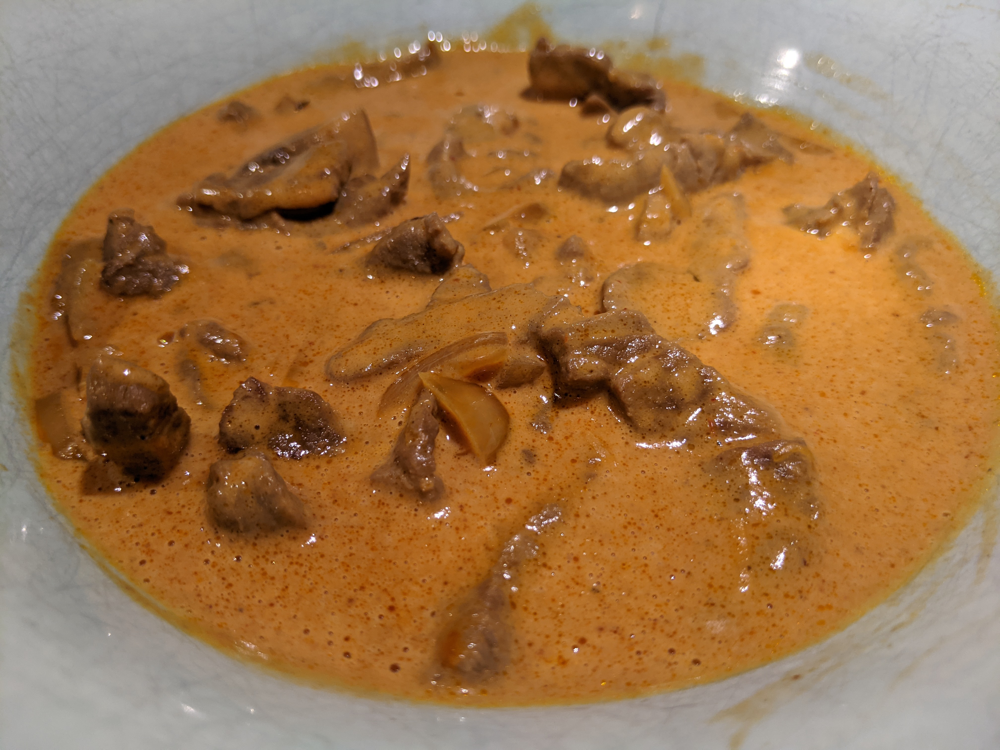

Beef Stroganoff

Ingredients
Searing:
1 kg stir-fry beef
3 yellow onions
a bit of wine/vinegar
Sauteeing:
a bunch of mushrooms
Simmering:
1 can tomato paste
1 beef stock cube
2 cups heavy cream
Instructions
-
On a Dutch oven, sear 1 kg stir-fry beef in batches. Deglaze with 3 yellow onions and a bit of wine/vinegar.
Set aside.
-
Sautée a bunch of mushrooms.
Set aside along with seared beef and onions.
-
Warm until simmering:
1 can tomato paste
1 beef stock cube
2 cups cooking cream
-
Add back reserved ingredients and cook a bit more.